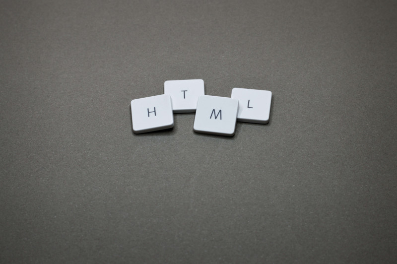

Posts
Making a website
Jan 28, 2022
I have had this idea for a while, at least since 2018, and wanted to experiment with it. At that time, I didn't even know how to approach building a website, it was all very abstract. Sure, there were some ready-made solutions that offered all-in-one packages, but I wanted to make something by myself. How hard could it be?
Better left to experts?
In 2020, after the pandemic hit, I decided to make at least something. First on my list was getting a domain. The hard part was choosing the domain name, and the rest was as simple as writing in the name and clicking buy. Great, I have registered a domain now, I thought to myself. But how do I actually use it?
Some research later, I settled on the cheapest plan of a paid server hosting provider, mainly for two reasons. First, I wanted something public so that I could work on it and access it from anywhere. Second, I wanted something consistent with easy setup for various configurations and fast reset options. I settled on an Ubuntu system with nginx for serving content and Let's Encrypt for effortless HTTPS support.
Writing a website using pure HTML, CSS, and JS seemed unfeasible to me. I could make webpages with simple layouts and designs, but they looked bland and unappealing. I messed about with React and a bit of Angular, but even though I understood smaller parts, I could not see the big picture of how it all came together and what I had to do to achieve my goals. Additionally, the amount of documentation and different options seemed overwhelming, so I slowly abandoned the idea.
However, I haven't abandoned the server; I used it for other experiments, including REST API development (e.g., Flask), trying out Kotlin and Ktor for backend, playing with Docker, and even running a Hyperledger Aries mediator agent.
Trying again
In the middle of January 2022, I revisited the idea of a personal website. Wanting to make my life easier, I searched for various frameworks or helpers that make building websites easy. I looked at quite a few of static site generators, which seemed perfect for the job at hand. However, having tried two (Hugo and Zola), I found documentation and ease of extensibility lacking, especially regarding theming and design customization.
I'm sure I could figure it out if I had given it some more time, but I wanted to avoid investing much more time into something that I (likely) won't need anywhere else. I also thought about Bootstrap, but it seemed a bit too much for my use case. Considering all of this, I once again contemplated about giving pure HTML and CSS a try.
While searching for various online resources, I stumbled upon HTML5 UP with beautiful and free (!) templates under license conditions. It seemed like a perfect starting point for my project, so I made a selection of designs that I liked and chose one as a base design, using others as inspiration for some components. I fired up Visual Studio Code and started customizing the design to give it a personal touch. Few days later, the website was ready to be served.
Interested?
The source code of this website is freely available on my GitHub.